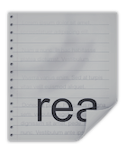

前言
写了几天的博客之后发现，连我自己都没有兴趣查看自己的博客。
觉得只给予自己那浅薄的markdown语法，和NexT官方的默认配置。继续写作是不行了。
而自己没有一点前端的知识背景，最近时间也比较紧能解决目前的需求就行了，没有深究进去。
下面的一些配置和文章中的写法主要参照：打造个性超赞博客Hexo+NexT+GithubPages的超深度优化
上面一篇的配置及其详细，阅读起来时间成本比较高。下面总结出一些我认为我自己写博客的一些刚需，并给出相应的解决方案。
部署与使用见上一篇：hexo部署与使用入门
NexT 主题订制
默认的主题，存在下面一下我不喜欢的配置，
- 我使用Mist主题，其中首页中前十个网页是全量显示的其实我只想要显示简介就行了。
- 网页之间没有之前没有明显的边界线，区分度不大。
- 链接采用暗黑的风格，不明显。
- 首页只能按照date排序，我想要自定义一些排序。
- hexo new 产生自己需要的默认配置
- markdown在网页中子标题和文本的区别度不大。
解决方案：
问题2,3，6在 themes/next/source/css/_custom/custom.styl 中添加自己的配置。
配置如下：我自己的配置
问题1：1
2
3
4
5
6# Automatically Excerpt. Not recommend.
# Please use <!-- more --> in the post to control excerpt accurately.
auto_excerpt:
- enable: false
+ enable: true
length: 150
问题4：1
2
3# 卸载默认按照的插件，安装新的插件。
npm uninstall hexo-generator-index --save
npm install hexo-generator-index-pin-top --save
要排序文章只要在Front-matter 中 添加 top: num。
之后就可以按照num排序了。
问题5：
更改scaffolds/post.md 文件，如下 post.md
markdown 进阶
代办列表：
1
2- [ ] 不勾选
- [x] 勾选显示如下：
- 不勾选
- 勾选
字体编辑：*， _， ~
1
2
3斜体： *斜体* _斜体_
粗体： **粗体** __粗体__
删除线：~~删除线~~显示如下：
斜体： 斜体 _斜体_
粗体： 粗体 粗体
删除线：删除线插入自定义大小和布局的图片：
<div align="center"><img src="" width="" height=""></div>
align 是怎么布局， height可以不加，给出width后根据原图自动计算。
实例：图片和文字混排：
1
2
3
4
5
6
7<img src="read.jpg" align="right">
这是一个示例图片。
图片显示在 N 段文字的右边。
N 与图片高度有关。
刷屏行。
刷屏行。
到这里应该不会受影响了，本行应该延伸到了图片的正下方，所以我要足够长才能确保不同的屏幕下都看到效果。显示如下：
这是一个示例图片。
图片显示在 N 段文字的右边。
N 与图片高度有关。
刷屏行。
刷屏行。
到这里应该不会受影响了，本行应该延伸到了图片的正下方，所以我要足够长才能确保不同的屏幕下都看到效果。
有效的写作样式
主题自带样式 代码块高亮
先看效果：1
2
3
4
5
6
7
8
9
10
11
12
13
14
15
16/**
* @author John Smith <john.smith@example.com>
*/
package l2f.gameserver.model;
public abstract class L2Char extends L2Object {
public static final Short ERROR = 0x0001;
public void moveTo(int x, int y, int z) {
_ai = null;
- log("Should not be called");
+ if (1 > 5) { // wtf!?
return;
}
}
}
1 | \`\`\` [language] [title] [url] [link-text] |
在 ``` 后面可以添加diff，然后用-，+辨识代码的修改。
自定义自己的顶部文字样式：
1 | // 文章```代码块顶部样式 |
主题自带样式 文本居中引用
源码：
1 | {% cq %} |
效果：
人生乃是一面镜子，
从镜子里认识自己，
我要称之为头等大事，
也只是我们追求的目的！
更多 NexT 主题自带的标签样式，请点击：http://theme-next.iissnan.com/tag-plugins.html
主题自带样式 note标签
源码：1
2
3
4
5
6
7<div class="note default"><p>default</p></div>
<div class="note primary"><p>primary</p></div>
<div class="note success"><p>success</p></div>
<div class="note info"><p>info</p></div>
<div class="note warning"><p>warning</p></div>
<div class="note danger"><p>danger</p></div>
<div class="note danger no-icon"><p>danger no-icon</p></div>
效果：
default
success
info
warning
danger
增强显示效果，在config文件中配置：1
2
3
4
5
6
7
8
9# Note tag (bs-callout).
note:
# 风格
style: flat
# 要不要图标
icons: true
# 圆角矩形
border_radius: 3
light_bg_offset: 0
主题自带样式 label标签
源码：1
2
3
4
5
6{% label default@默认 %}
{% label primary@主要 颜色 %}
{% label success@成功%}
{% label info @ 消息%}
{%label warning@警告%}
{% label danger@danger %}
效果：
默认
主要 颜色
成功
消息
警告
danger
自定义样式 引用
在custom.styl中加入了1
2
3
4
5
6
7
8
9// 自定义的引用样式
blockquote.question {
color: #555;
border-left: 4px solid rgb(16, 152, 173);
background-color: rgb(227, 242, 253);
border-top-right-radius: 3px;
border-bottom-right-radius: 3px;
margin-bottom: 20px;
}
实现下面代码：1
<blockquote class="question">内容</blockquote>
效果：
内容